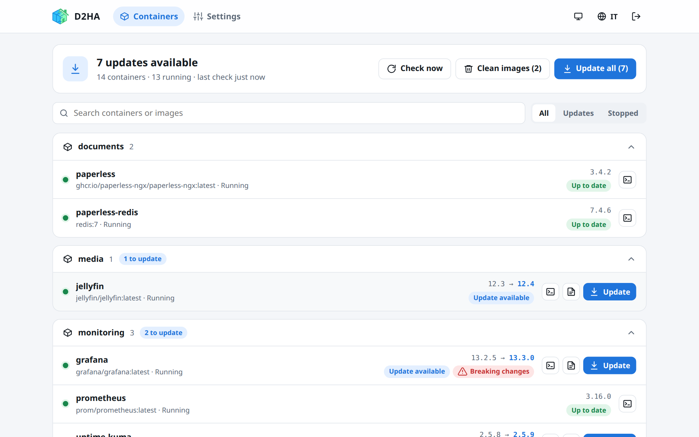
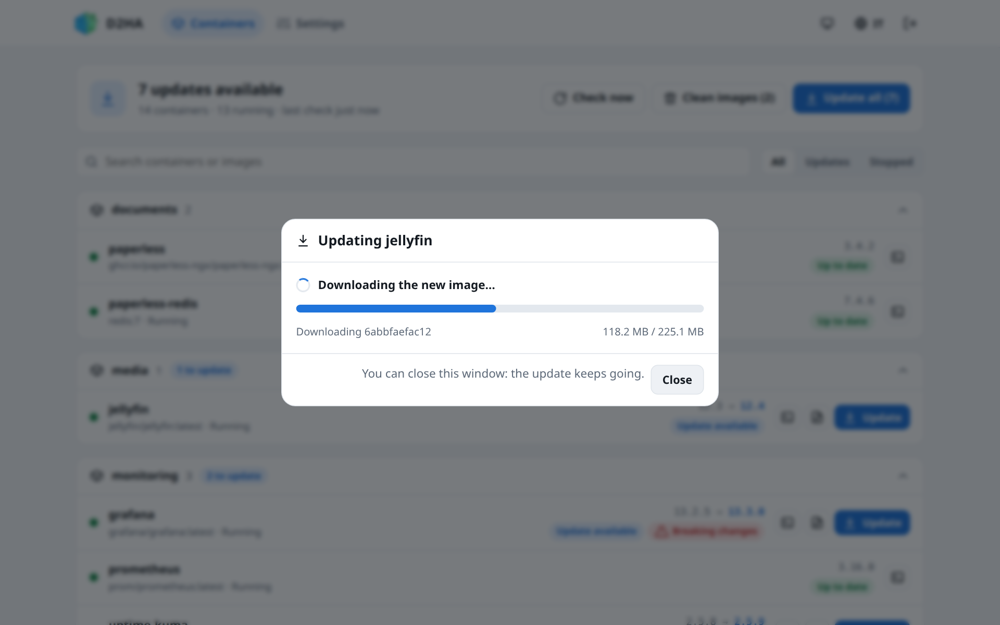
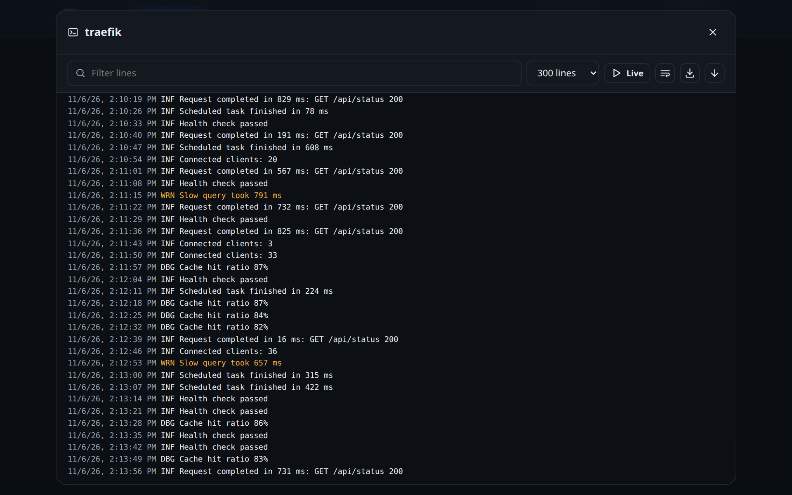
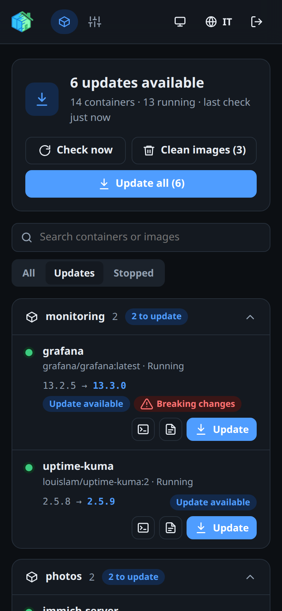
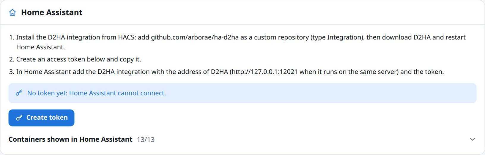

Real versions
Registry digests are checked with lightweight HEAD requests, so you see
13.2.5 → 13.3.0 — not just “something changed”.
Know when your containers have updates, read what changed, update them safely and read their logs — in a small web app and in Home Assistant.
A small, focused tool that does a few things very well — on the web and in Home Assistant.
Registry digests are checked with lightweight HEAD requests, so you see
13.2.5 → 13.3.0 — not just “something changed”.
The GitHub release of that exact version, with breaking changes highlighted before you update.
The new image is pulled while the container keeps running; it is then recreated with your settings — and rolled back if it does not start.
Tail or follow the logs of any container, with search, coloured levels and download.
An integration from Home Assistant's Marketplace (or HACS) brings update entities, container states and action buttons to your dashboards.
A message when an update appears — once per version, with the release-notes link and breaking-change warnings — when a container stops with an error or turns unhealthy, and never for a stop you asked for. Each kind can be turned off, and a label excludes a container.
Sign-in with optional 2FA, no third-party requests from the browser, and a Docker socket proxy in the example setup.
A clean, focused UI — in light and dark themes, on desktop and phone.





Copy the example compose file, start it, and sign in with the code from the logs. That’s it.
# get the example compose file and start d2ha
curl -O https://raw.githubusercontent.com/Arborae/docker2homeassistant/main/compose.example.yaml
mv compose.example.yaml compose.yaml
docker compose up -d
docker logs d2ha # ← your one-time setup code
Then open http://localhost:12021, enter the setup code
and create your account — the example includes a Docker socket proxy, so D2HA never touches the
socket directly. On a server without a browser, open an SSH tunnel first
(ssh -L 12021:localhost:12021 <user>@<server>), then that address works on
your computer. Details in the
installation guide, everything else in the
documentation.
Issues and small, focused PRs are always welcome.